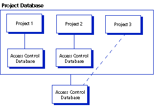

An access control database defines the users who are authorized to perform actions on projects and defines the actions that users can perform. In Serena ChangeMan Version Manager, the actions are associated with Version Manager privileges. An access control database is an encrypted file.
When you define an access control database, part of the definition is a user ID for each authorized user. When you are using an access control database for security, if the user ID that Version Manager obtains is not defined in the access control database for a project database or project, then that user cannot access the project database or project--meaning that the user cannot access the archives. Version Manager uses login sources to obtain user IDs.
When Version Manager obtains a user ID, the program can check the access control database to see if the user ID exists there. If the user ID does not exist, you can configure Version Manager to automatically create the user ID in the access control database associated with a project database or project and assign default privileges to the user. See Setting Login Sources for a discussion of how to set up Version Manager to automatically create users in the access control database.
Access control databases are associated with project databases and projects. Version Manager uses an access control database if it is specified and enabled in the configuration file associated with the project database or project or if it is embedded into Version Manager. By default, when you create a project database, an access control database is created and specified but not enabled in the master configuration file that is also created.
A project database can have one access control database associated with it, and each project within the project database can have an access control database associated with it. If you have an access control database defined for your project database and not for the projects within the project database, the projects use the access control database associated with the project database. Also, you can define an access control database for some of the projects in a project database and not others. For example, if you have three projects in a project database and you have defined an access control database for two of the three projects, those two projects will use their access control database and the third will use the project database's access control database.
If you define an access control database for a project database, you have the same access control for all the projects in the project database. By defining an access control database for each project, you can further restrict the control for each project. And by using access lists you can control access for each individual archive of a project.
When you create a project database, Version Manager creates a default access control database. This access control database contains one user with your user ID, the SuperUser privilege set assigned to you, and a few default privilege sets (see Default Privilege Sets). This access control database is specified but not enabled in the project database's master configuration file, meaning that the project database does not use the access control database for security.
| Using Security | Enabling Security |
| Specifying the Access Control Database Location | Associating Configuration Files with Projects |
| Embedding an Access Control Database | Creating Project Databases |